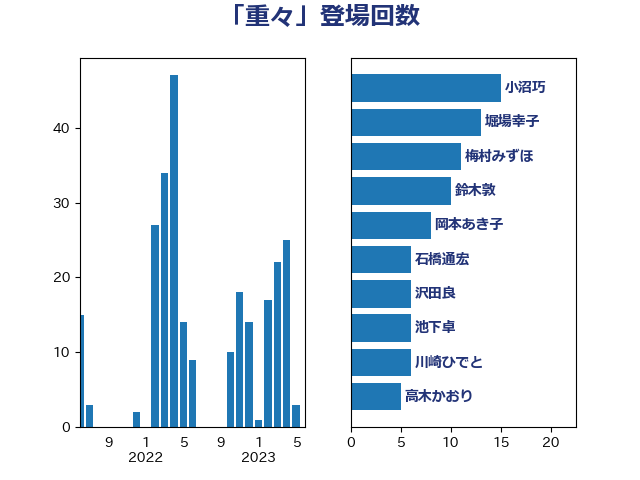

単語「重々」

| 小沼巧 | 立憲民主党 | 15 回 |
| 堀場幸子 | 日本維新の会 | 13 回 |
| 梅村みずほ | 日本維新の会 | 11 回 |
| 鈴木敦 | 国民民主党 | 10 回 |
| 岡本あき子 | 立憲民主党 | 8 回 |
| 石橋通宏 | 立憲民主党 | 6 回 |
| 沢田良 | 日本維新の会 | 6 回 |
| 池下卓 | 日本維新の会 | 6 回 |
| 川崎ひでと | 自由民主党 | 6 回 |
| 高木かおり | 日本維新の会 | 5 回 |
| 若宮健嗣 | 自由民主党 | 5 回 |
| 守島正 | 日本維新の会 | 5 回 |
| 西村明宏 | 自由民主党 | 4 回 |
| 石垣のりこ | 立憲民主党 | 4 回 |
| 渡辺創 | 立憲民主党 | 4 回 |
| 河西宏一 | 公明党 | 4 回 |
| 梅谷守 | 立憲民主党 | 4 回 |
| 川合孝典 | 国民民主党 | 4 回 |
| 岸真紀子 | 立憲民主党 | 4 回 |
| 太栄志 | 立憲民主党 | 4 回 |
| 音喜多駿 | 日本維新の会 | 3 回 |
| 田村まみ | 国民民主党 | 3 回 |
| 林芳正 | 自由民主党 | 3 回 |
| 宮本岳志 | 日本共産党 | 3 回 |
| ながえ孝子 | 無所属 | 3 回 |
| 馬場雄基 | 立憲民主党 | 2 回 |
| 西野太亮 | 自由民主党 | 2 回 |
| 藤巻健太 | 日本維新の会 | 2 回 |
| 荒井優 | 立憲民主党 | 2 回 |
| 緒方林太郎 | 無所属 | 2 回 |
| 田中健 | 国民民主党 | 2 回 |
| 浅田均 | 日本維新の会 | 2 回 |
| 櫻井周 | 立憲民主党 | 2 回 |
| 小沢雅仁 | 立憲民主党 | 2 回 |
| 安江伸夫 | 公明党 | 2 回 |
| 国定勇人 | 自由民主党 | 2 回 |
| 吉川元 | 立憲民主党 | 2 回 |
| 古賀之士 | 立憲民主党 | 2 回 |
| 古川禎久 | 自由民主党 | 2 回 |
| 加藤勝信 | 自由民主党 | 2 回 |
| 中川貴元 | 自由民主党 | 2 回 |
| 上月良祐 | 自由民主党 | 2 回 |
| 高橋英明 | 日本維新の会 | 1 回 |
| 高木真理 | 立憲民主党 | 1 回 |
| 須藤元気 | 無所属 | 1 回 |
| 青柳仁士 | 日本維新の会 | 1 回 |
| 青木愛 | 立憲民主党 | 1 回 |
| 青山繁晴 | 自由民主党 | 1 回 |
| 金子恵美 | 立憲民主党 | 1 回 |
| 野田聖子 | 自由民主党 | 1 回 |
| 野村哲郎 | 自由民主党 | 1 回 |
| 近藤和也 | 立憲民主党 | 1 回 |
| 辻元清美 | 立憲民主党 | 1 回 |
| 赤羽一嘉 | 公明党 | 1 回 |
| 赤嶺政賢 | 日本共産党 | 1 回 |
| 舟山康江 | 国民民主党 | 1 回 |
| 竹谷とし子 | 公明党 | 1 回 |
| 福山哲郎 | 立憲民主党 | 1 回 |
| 礒崎哲史 | 国民民主党 | 1 回 |
| 石川香織 | 立憲民主党 | 1 回 |
| 石井苗子 | 日本維新の会 | 1 回 |
| 石井正弘 | 自由民主党 | 1 回 |
| 盛山正仁 | 自由民主党 | 1 回 |
| 玉木雄一郎 | 国民民主党 | 1 回 |
| 牧原秀樹 | 自由民主党 | 1 回 |
| 片山大介 | 日本維新の会 | 1 回 |
| 湯原俊二 | 立憲民主党 | 1 回 |
| 清水貴之 | 日本維新の会 | 1 回 |
| 浜田聡 | NHK党 | 1 回 |
| 河野太郎 | 自由民主党 | 1 回 |
| 櫻井充 | 自由民主党 | 1 回 |
| 森本真治 | 立憲民主党 | 1 回 |
| 柳ヶ瀬裕文 | 日本維新の会 | 1 回 |
| 早稲田ゆき | 立憲民主党 | 1 回 |
| 斎藤アレックス | 国民民主党 | 1 回 |
| 打越さく良 | 立憲民主党 | 1 回 |
| 平沼正二郎 | 自由民主党 | 1 回 |
| 市村浩一郎 | 日本維新の会 | 1 回 |
| 岸田文雄 | 自由民主党 | 1 回 |
| 岩谷良平 | 日本維新の会 | 1 回 |
| 岡田直樹 | 自由民主党 | 1 回 |
| 山添拓 | 日本共産党 | 1 回 |
| 小野田紀美 | 自由民主党 | 1 回 |
| 小西洋之 | 立憲民主党 | 1 回 |
| 寺田静 | 無所属 | 1 回 |
| 寺田学 | 立憲民主党 | 1 回 |
| 宮路拓馬 | 自由民主党 | 1 回 |
| 宮崎政久 | 自由民主党 | 1 回 |
| 室井邦彦 | 日本維新の会 | 1 回 |
| 大島敦 | 立憲民主党 | 1 回 |
| 大島九州男 | れいわ新選組 | 1 回 |
| 堤かなめ | 立憲民主党 | 1 回 |
| 和田政宗 | 自由民主党 | 1 回 |
| 古賀友一郎 | 自由民主党 | 1 回 |
| 古庄玄知 | 自由民主党 | 1 回 |
| 北神圭朗 | 無所属 | 1 回 |
| 勝部賢志 | 立憲民主党 | 1 回 |
| 勝目康 | 自由民主党 | 1 回 |
| 倉林明子 | 日本共産党 | 1 回 |
| 伊藤孝恵 | 国民民主党 | 1 回 |
| 丸川珠代 | 自由民主党 | 1 回 |
| 中野洋昌 | 公明党 | 1 回 |
| 中曽根康隆 | 自由民主党 | 1 回 |
| 一谷勇一郎 | 日本維新の会 | 1 回 |
| たがや亮 | れいわ新選組 | 1 回 |
| おおつき紅葉 | 立憲民主党 | 1 回 |